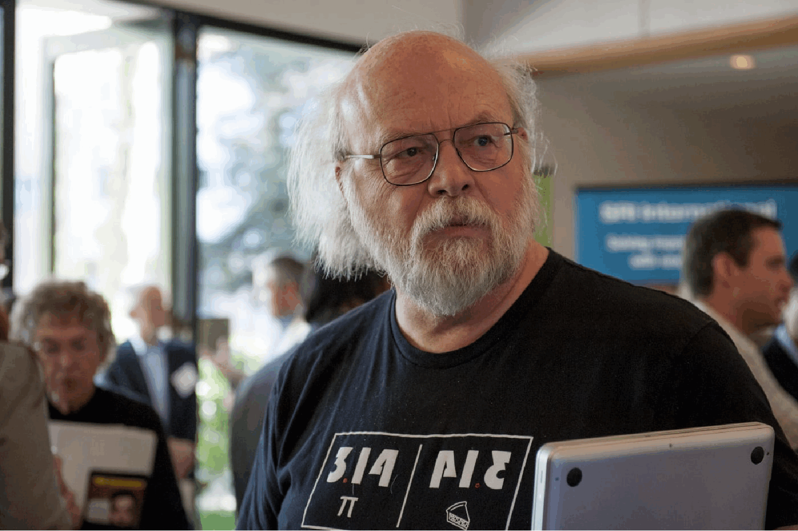
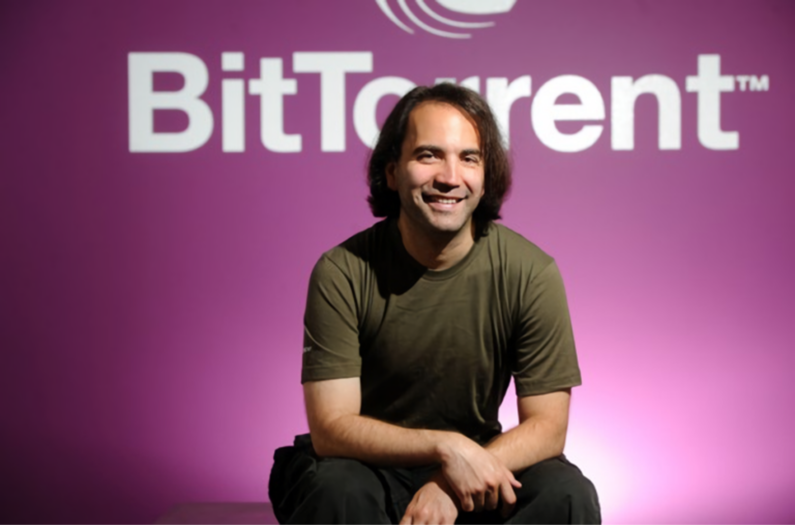

Лучшие программисты мира, легендарные личности в IT
Линус Торвальдс
Известнейший программист с финскими и американскими корнями. Именно он создал ОС Linux, которая активно используется разработчиками различных приложений, кодерами, на ней функционируют дата-центры. За счет трудов Торвальдса, была создана полностью бесплатная ОС с открытым программным кодом. Также Линус продолжает заниматься доработками по Linux, предложил множество успешных идей.
Дональд Кнут
Выдающийся американский ученый, автор легендарной монографии «Искусство программирования». Именно эта книга стала учебным пособием для миллионов программистов по всему мир. Сам Кнут имеет звание почетного профессора в Стенфорде.В своих работах Дональд Кнут смог охватить большинство существующих направлений в сфере IT. В его книгах можно найти полезную информацию не только для новичков, но и опытных программистов. Что касается направления анализа алгоритмов в программировании, именно профессор Кнут является его создателем.
Сэр Тим Бернерс-Ли
Является создателем HTTP-протокола, того самого, на котором основана и функционирует все сеть “Интернет”. Он занимался его разработкой женевской лаборатории по ядерным исследованиям CERN. Это единственный в мире программист, которого возвели в титул рыцаря. Тим возглавляет организацию “Альянс за доступный интернет”, которая ставит перед собой цель сделать “всемирную паутину” максимально удобной и доступной для всех. Также Бернерс-ЛИ является главой фонда World Wide Web Foundation.
Джеймс Гослинг
Профессиональный программист, создатель Java — строго типизированного объектно-ориентированного языка программирования. Следующая разработка Гослинга, которая значительно повысила его репутацию в мире IT – NEWS. Это специализированная система, с помощью которой распределяются вычисления в компьютерных сетях.Также Гослинг работал во многих других проектах, занимался разработкой алгоритмов для Google, специализированных программ

Андерс Хейлсберг
Является создателем компилятора для Pascal. Именно благодаря его работе процесс компиляции программы стал максимально быстрым, занимает несколько секунд. Изначально компилятор писался под DOS, однако, в дальнейшем его перенесли в среду Turbo Pascal. Заслуга Хейлсберга перед другими специалистами IT в том, что именно благодаря ему повысилась общая производительность сетей, все процессы стали гораздо быстрее.
Марк Цукерберг
Известный программист, создатель и основное публичное лицо Facebook – одной из первых социальных сетей, которая имеет огромную популярность во всем мире. Несмотря на многочисленные споры, скандалы, интриги, связанные с его “детищем”, проект продолжает развиваться, внедряет новые технологии, пытается запустить собственную метавселенную.
Брэм Коэн
Человек подаривший миру бесплатный, повсеместно доступный протокол BitTorrent. С его помощью сотни миллионов пользователей по всему миру смогли быстро загружать различные файлы из интернета на свои компьютеры. На сегодняшний день программой Torrent пользуется более 250 млн человек, которые скачивают огромные объемы данных. Технология BitTorrent активно используется Twitter, Facebook, Blizzard, Internet Archive, Eve Online, а также многими другими компаниями с мировым именем.
